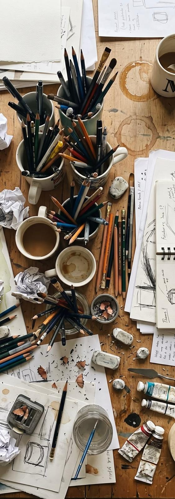
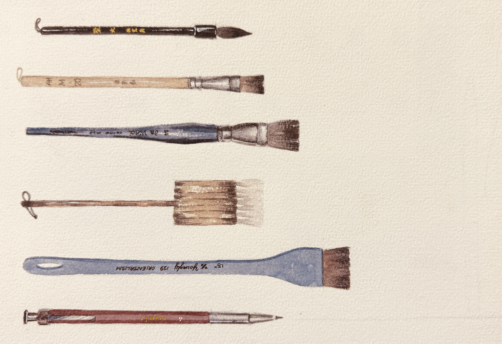
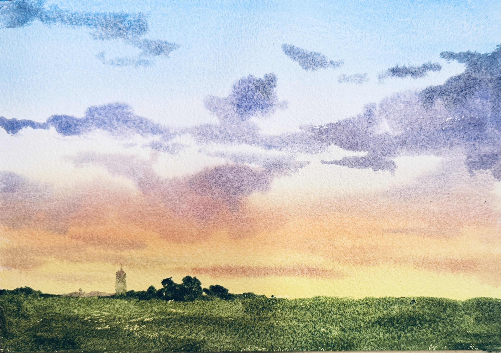
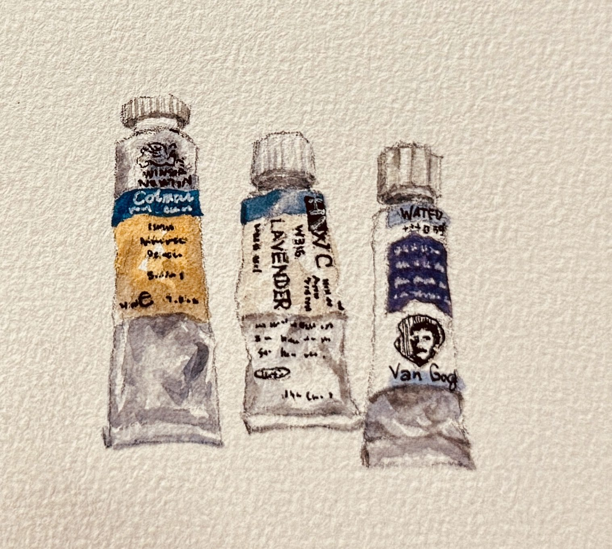
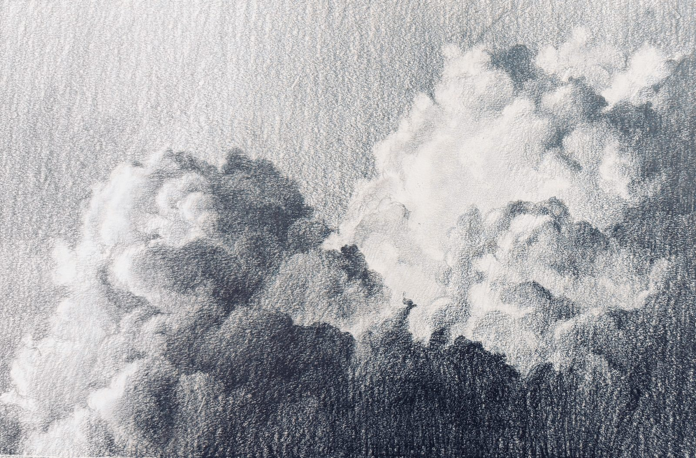
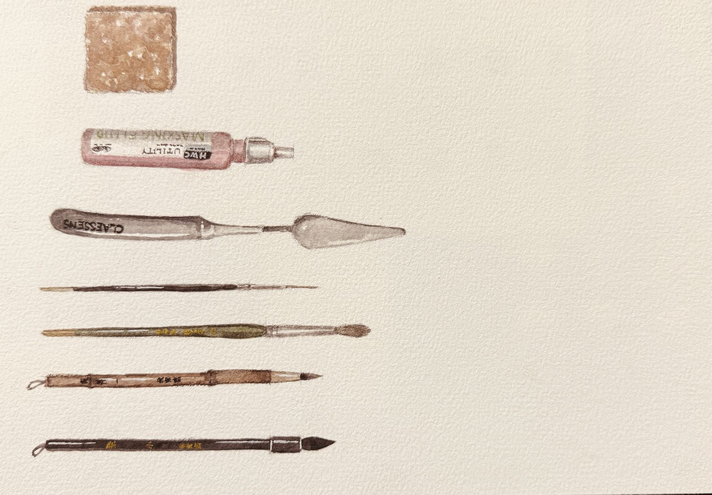

Unlock your
creative potential.
Step-by-step video lessons designed for all skill levels — watercolour, oil painting and sketch art from passionate creators.
View courses

Step-by-step video lessons designed for all skill levels — watercolour, oil painting and sketch art from passionate creators.
View courses





Each module features both Beginner and Advanced levels. The Beginner courses are clear and easy to follow. All lessons include clear English voiceovers and subtitles for a seamless learning experience.
Designed for both beginners and experienced painters, this self-paced video curriculum guides you through colour mixing, essential tools, and refined techniques. It offers a comprehensive, step-by-step framework built on my years of experience as a student, artist, and instructor.
Inside the studio, you will explore a single subject from multiple angles and perspectives, mastering every stage of the painting process — from initial sketch to final touch.
Learn comfortably at your own pace.
Break complex paintings into approachable, manageable phases.
Not at all. All you need is a passion for painting. Passion sparks interest, and interest is what keeps you going. Every artist brings a unique voice and style to their canvas — that is the real beauty of art. If you love painting and expressing emotions through colour, you already have everything you need.
This is a common misconception. Colour doesn’t ruin art — it brings it to life. Many enthusiasts struggle with colour simply because they haven’t learned core colour theory or proper tool techniques. Here, we remove the guesswork so you can truly enjoy playing with colour.
Never. Countless professional artists only picked up a brush later in life. Many of my students started after retirement, often bringing more focus, unique perspectives and creative ideas than younger learners. Seeing their artistic journey flourish is one of my greatest joys as a teacher.
It’s easy to fall into the trap of comparison — especially on social media — and lose sight of why you started. Art isn’t a competition, and there is no single definition of “perfection”. When you stop treating art as a test of success or failure and simply paint for the joy of creation, you give your work true soul and room to grow.
Every course can be bought at the Fellow tier, which adds Crystal’s private Discord channel to the course videos — somewhere to post work in progress and ask questions as you paint.